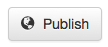
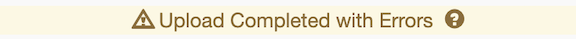
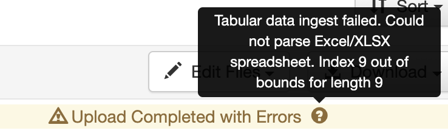

Glossary of Icons & Symbols¶
Email - Envelope Icon¶

Appears on Dataverse collection pages, the email goes to UVA LibraData Support (libra@virginia.edu).
Plus sign¶
The plus sign displays in metadata for fields that are repeatable.
Asterisks¶
 Metadata fields that are required have an asterisk next to the field name.
Metadata fields that are required have an asterisk next to the field name.
Question Marks¶
Display labels for various Dataverse Repository labels and metadata fields. Gives you detailed information, when your cursor hovers over this Question Mark symbol.
Dataverse & Dataset Symbols¶
When looking at search results, you will find the following symbols:
 Dataverse collection symbol - Dataverse collections display this symbol enclosed in a “red” box.
Dataverse collection symbol - Dataverse collections display this symbol enclosed in a “red” box.
 Dataset symbol - Datasets display this symbol enclosed in a “blue” box.
Dataset symbol - Datasets display this symbol enclosed in a “blue” box.
 Linked Dataset - Datasets that are linked from another local dataverse collection display this symbol. Linked datasets can be found when searching either of the dataverse collections (one published in and one that it is linked to).
Linked Dataset - Datasets that are linked from another local dataverse collection display this symbol. Linked datasets can be found when searching either of the dataverse collections (one published in and one that it is linked to).
Harvested Dataset - Metadata records that have been harvested from other Dataverse Repositories, such as Harvard, Odum Institute, plus others. Harvested metadata records are searchable as other records in LibraData. Clicking on a harvested dataset takes the user to the original repository.
File Symbols¶
When you see this symbol next to a file you can view the file before downloading. You can only view certain filetypes: ASCII Text (txt, html), audio (mp3, wav, ogg), image (gif, jpeg, png), pdf, video (mp4, ogg, quicktime), csv, tsv, stata syntax, and r syntax.
On the dataset page, all files have the Access File symbol . Clicking the Access File symbol you can download the file (and if applicable other formats), download the metadata - file citation and/or variable metadata, or explore the file with installed previewers for the following filetypes: ASCII Text (txt, html), audio (mp3, wav, ogg), image (gif, jpeg, png), pdf, video (mp4, ogg, quicktime), csv, tsv, stata syntax, and r syntax.
The File Option symbol appears on all dataset pages that you either own or have permission to edit.
On the dataset page, the file options (to modify a file) are: edit metadata, restrict files, replace a file, or delete a file.
On the dataset creation page, just after upload of files, the file options are to add/edit the “Provenance” and/or “tags”.
Sharing Datasets¶

To share a dataset on your favorite social media networks. Click the “share” icon (seen above). You can only share datasets that have been published. You can share on Facebook, Twitter or LinkedIn by clicking on the following icons respectively.
Publish Datasets¶

When you publish a dataset, you make it available to the public so that other users can browse or search for it. Note: UVA depositors MUST acknowledge the following before a dataset can be published:
- You have the legal right and authorization to make the data publicly available online world-wide through Libra.
- In preparing the data for public archiving and distribution, you have removed any confidential or sensitive information, student education records protected under FERPA, and all information that personally identifies any individual or that contains any information classified as highly sensitive under state or federal law, or UVA policy.
- If the submission is based upon work that has been sponsored or supported by an agency or organization other than UVA such as the National Institutes of Health, the National Science Foundation, or a private sponsor or funder, you represent that you have fulfilled any right of review, confidentiality, or other obligations required by that contract or agreement.
- You represent that you have made a reasonable effort to ensure that the data contained in your submission is accurate.
- You represent that you have appropriately acknowledged other researchers whose work contributed to the data.
Tabular Data Ingest¶
Files in certain formats - Stata, SPSS, R, Excel(xlsx) and CSV - may be ingested as tabular data. Files that are recognized as tabular data and not flagged can be used in applications integrated with your Dataverse Repository.
If the dataverse software considers your file “tabular” it will try to convert the raw data content extracted from such files in plain text, TAB-delimited files. If there is a problem, your files will still be uploaded, but you will see the following icon next to those files: 
Hovering over the warning icon displays detailed information, such as: 
Once the dataset is published, this symbol is not seen by the public. The owner of the data file will still see the icon.